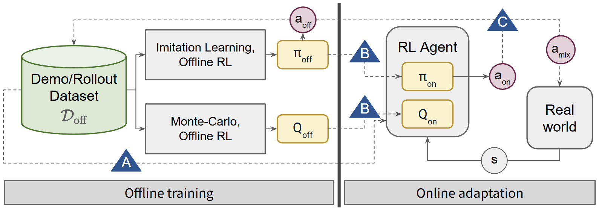

Several approaches have been proposed to improve the sample efficiency of online reinforcement learning (RL) by leveraging demonstrations collected offline. The offline data can be used directly as transitions to optimize the RL objectives, or offline policy and value functions can first be inferred from the data for online finetuning or to provide reference actions. While each of these strategies has shown compelling results, it is not clear which method has the most impact on the final performance, whether these approaches can be combined, and if there are cumulative benefits. We classify existing demonstration-augmented RL approaches into three categories and perform an extensive empirical study of their strengths, weaknesses, and combinations to identify the contribution of each strategy and identify effective hybrid combinations for sample-efficient online RL.
Inspired by Rainbow-DQN, which clarified the importance of various extensions to the DQN algorithm, Rainbow-DemoRL performs a large-scale empirical study to identify how different strategies for leveraging offline demonstrations can be combined to maximize online reinforcement learning efficiency and performance.

We classify existing approaches into three distinct, non-mutually exclusive strategies.
Direct Data Sampling
Uses offline data directly within the online training loop. This includes prefilling the replay buffer (with 50/50 sampling) or adding an auxiliary behavior cloning loss to the RL actor objective.
Pretraining
Extracts an initial policy or value function, providing a strong starting point for online fine-tuning. This can be done via behavior cloning (BC), offline RL methods like CQL and CalQL, or via a simple recipe we propose, Monte-Carlo-Q (MCQ).
Control Priors
Uses a pre-trained offline policy as a reference for online actions. This involves "mixing" actions via residual RL, uncertainty-based interpolation (CHEQ), or selection based on Q-values (IBRL).
We evaluate hybrid algorithms combining strategies using Soft Actor-Critic (SAC) as the base online RL algorithm. For each task-robot setting, we show the Sample Efficiency Improvement (SEI) scores of the hybrid algorithms compared to SAC. The SEI score represents the average normalized percentage improvement in Area-Under-Curve (AUC) over the SAC baseline across all experimental settings, accounting for both learning speed and final success rates.
From the results, the following conclusions are most useful for practitioners looking to improve sample efficiency of online RL with demonstrations:
Skip conservative critic pretraining Offline RL methods that learn conservative critics require a recalibration phase for online adaptation. This introduces a sample overhead that often outweighs its initialization benefits.
Use buffer prefill Prefilling the online agent's replay buffer with expert transitions and oversampling them (Strategy A) is the single most consistent driver of sample efficiency across all tasks.
Check out the full paper for analysis on the isolated impact of each strategy variant, and how it varies with task difficulty.
@misc{bhatt2025rainbow,
title={Rainbow-DemoRL: Combining Improvements in Demonstration-Augmented Reinforcement Learning},
author={Dwait Bhatt and Shih-Chieh Chou and Nikolay Atanasov},
year={2025},
url={https://dwaitbhatt.com/Rainbow-DemoRL/}
}